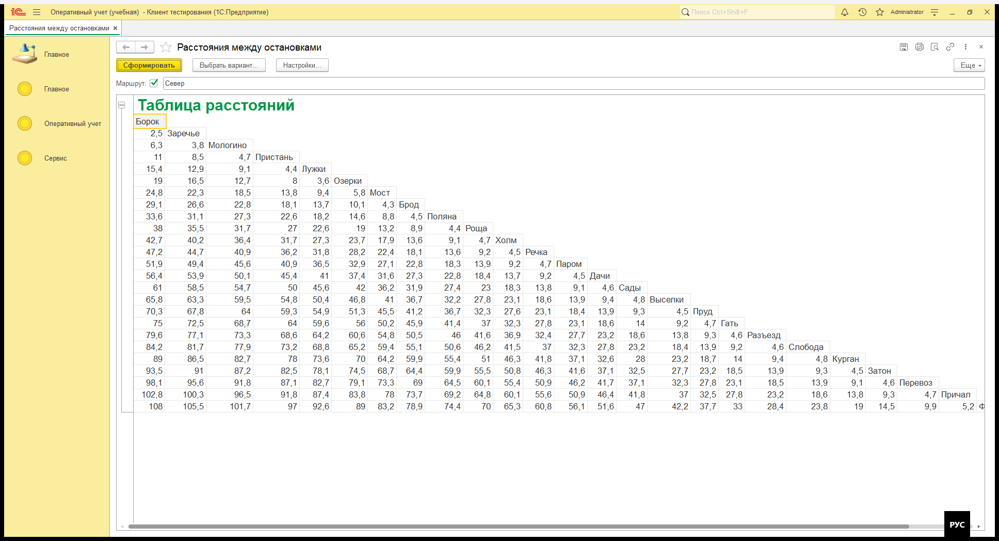
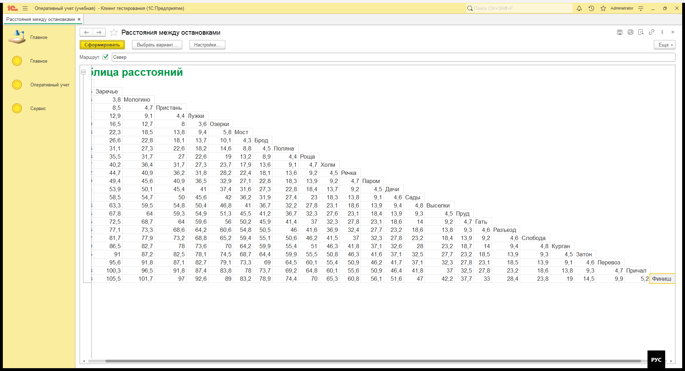
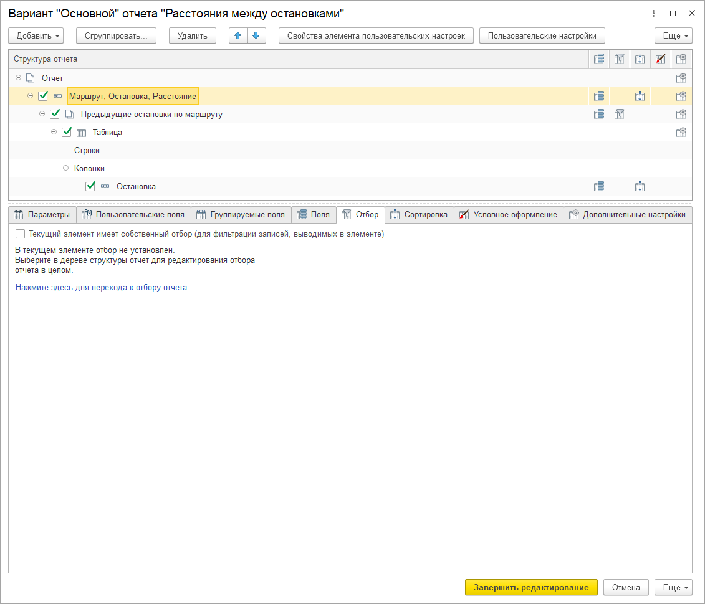
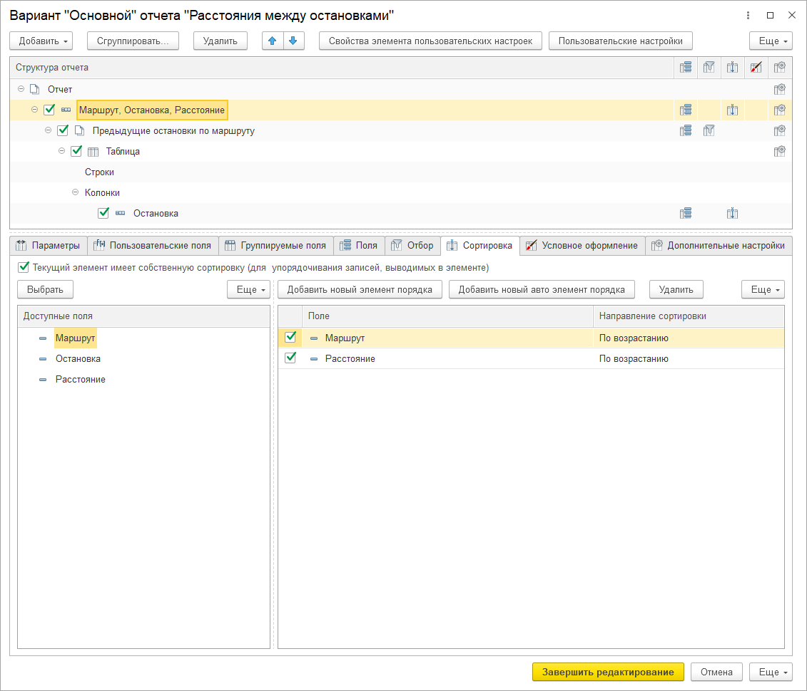

Проверка от имени пользователя. Отбор «Маршрут = Север». На маршруте 25 остановок: от «Борок» (0 км) до «Финиш» (108 км). Каждая остановка - одна строка и одна колонка.
25 строк помещаются на экран целиком. Последняя колонка с именем «Финиш» уходит за правый край окна.

Тот же отчет, прокрутка к последней ячейке. «Финиш» выделен, перед ним 5,2.

| Остановка | От начала, км |
|---|---|
| Борок | 0 |
| Заречье | 2,5 |
| Мологино | 6,3 |
| Пристань | 11 |
| Лужки | 15,4 |
| Озерки | 19 |
| Мост | 24,8 |
| Брод | 29,1 |
| Поляна | 33,6 |
| Роща | 38 |
| Холм | 42,7 |
| Речка | 47,2 |
| Паром | 51,9 |
| Дачи | 56,4 |
| Сады | 61 |
| Выселки | 65,8 |
| Пруд | 70,3 |
| Гать | 75 |
| Разъезд | 79,6 |
| Слобода | 84,2 |
| Курган | 89 |
| Затон | 93,5 |
| Перевоз | 98,1 |
| Причал | 102,8 |
| Финиш | 108 |
Проверка соседних остановок: 6,3 - 2,5 = 3,8; 102,8 - 98,1 = 4,7; 108 - 102,8 = 5,2.
Группировка «Маршрут, Остановка, Расстояние». Внутри вложенный отчет «Предыдущие остановки по маршруту»: таблица, пустые строки и колонки по полю «Остановка». Сортировка группировки: маршрут и расстояние по возрастанию.

